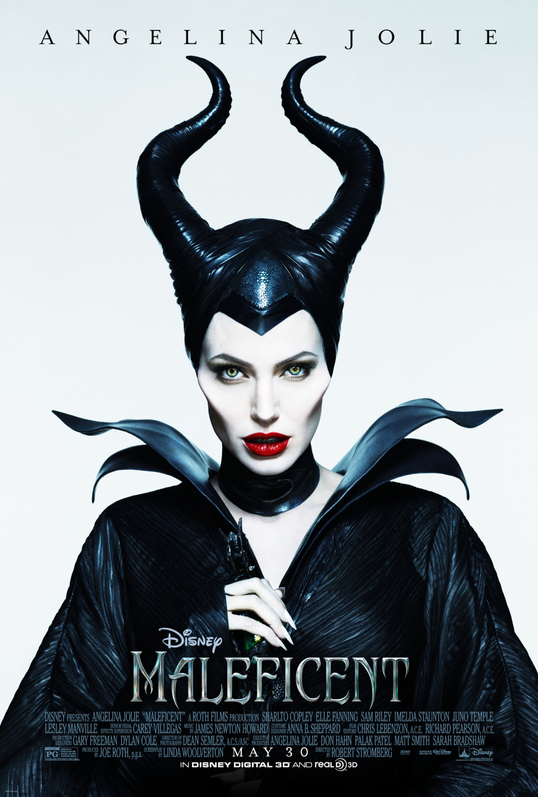

Design Portfolio
Remix of Maleficent Movie Poster
For one of my projects for Introduction to Visual Design, I was required to find a movie poster, rotate it 90 degrees, and change the mood of the poster using Photoshop. I chose to "remix" the poster for the movie Maleficent, and My goal for this project was to take the colorless, intense, ominous poster for the movie Maleficent and make it resemble more of a traditional fairytale poster. In order to do this, I added warm tones to Angelina Jolie and the backdrop of the cottage, and took Angelina Jolie out of the center of the poster and followed the Rule of Thirds to still make her the focal point, yet keeping the negative space of the original image. After receiving critiques on my rough draft from my peers in the class, I decided to increase the warm tones even more to further this mood shift as well as making the cottage more of a pivotal element in the piece by shifting the placement of the gradient. While Angelina Jolie is still intimidating in the photo, my design choices in the remix made the poster feel less maudlin, which is staying true to the original message but changing the mood.
Original Poster: |
Remixed Poster: |
|  |  |
Fair Fight U at Georgia Tech's Instagram Posts
Started by Stacey Abrams, Fair Fight promotes free and fair elections in Georgia and around the country by advocating for election reform at all levels, encourages voter participation in elections, and educate voters about elections and their voting rights. A new development in this organization is Fair Fight U, which is now a club at every major university on campus promoting voting to the student population. I have created a few instagram posts for this organization. All posts are in Georgia Tech's official color scheme, to indicate the information is intended for Georgia Tech students.
Key Dates for the 2020 General Election in Georgia:

For this post, I wanted to limit all the information about key dates to one picture, so that an Instagram user could easily repost it to their instagram story and educate their followers on key dates for the election. In terms of content, I organized the dates in bullets, and made the final bullet a different color than the rest to emphasize its importance. I wanted to include information about absentee ballots because it is important but isnt a date, so I included it in smaller text at the bottom. Finally, I added the yellow accent shape on the right to make it more visual appealing and more likely to get an Instagram user's attention.
Click Here to View Instagram Post
Requesting an Absentee Ballot:


For this post, I wanted the first picture to capture the user's eye and clearly state the purpose of the post because I knew all of the information about requesting an absentee ballot would not fit onto one picture. For the second, third, and fourth pictures in the post I wanted to include screenshots from the website official voting website to clearly walk a person through the process. Furthermore, I added key information for specfically requesting an absentee ballot to the Georgia Tech campus because I knew my audience for this post is located there.
Eugie Award Title Cards
I work in a science fiction lab at Georgia Tech, and part of the work we do is creating media for well known science fiction companies and awards. For DragonCon 2020, because it was virtual, we were tasked with creating a video presenting The Eugie Award, which is presented to an author who wrote the best piece of innovative fiction that year.
I was tasked with creating a title card for the award using Adobe Photoshop, which is pictured below. I was inspired by the flowing nature of the Eugie Award logo as well as the borders featured in old film title cards. I also created author cards for each of the nominees for The Eugie Award that complimented the title card. Each author card centered visually more around the story and less around the author because the Eugie Award is less about the authors and more focussed on the story.
Title Card:

Author Card: